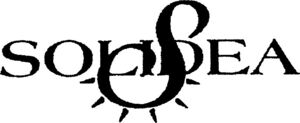

Trade Mark Journal No.2025/045 7 November 2025
WO0000001072626 (10)
Office of origin: Italy
Date of International Registration:29 October 2010
Date of designation in the UK:
17 September 2025

The mark consists of a sign depicting the wording "SOLIDEA" in fancy characters placed on the background of a stylized band having a curvilinear extension winding round itself in its final part, flanked externally by a series of small wedge-shaped segments, evocative of a strongly stylized letter S.
- Class 10
- Graduated compression elastic stockings, hold-up stockings, tights, pantyhose, socks, knee-length socks, leg warmers, leggings, pedal pushers, hosiery, under trousers, shorts, bermuda shortsand pants for the prevention of vascular ailments; hosiery for preventing vascular diseases, deep vein thrombosis [DVT], pulmonary embolism and against water retention; elastic stockings [surgery]; stockings for varices; clothing for preventing vascular diseases and against water retention; stockings, hold-up stockings, tights, pantyhose, single-leg tights,socks, knee-length socks, all for the therapy of venous insufficiency diseases, venous diseases,for curing phlebologic pathologies, in post-surgical treatment after varicectomy and saphenectomy, for post-sclerotherapy treatment and in prophylaxisof venous diseases, treatment of thrombosis and embolism, and for patients with diabetes, hallux valgus and trophic skin problems; supporting stockings, hold-up stockings, tights, pantyhose, single-leg tights, socks, and knee-length socks, all for the pre-partum period, for use after childbirth and during or after surgical treatment; medical support tights; stockings for medical use; compression hosiery; compression stockings for medical or therapeutic use; support stockings for medical and surgical purposes; stockings for lymphoedema; pantyhose for lymphoedema; single-leg tights for lymphoedema; socks for lymphoedema; knee-length socks for lymphoedema; abdominal belts; abdominal corsets; bands for medical purposes; abdominal support bands for medical purposes; support bandages for medical purposes; elastic bandages; elastic compression bandages for medical purposes; bandages for anatomical joints; belts for medicaluse; corsets for medical purposes; apparatus forthe treatment of cellulite through massage; glovesfor massage; maternity belts; maternity girdles; maternity support belts for medical purposes; shorts for preventing pre-pregnancy and post-pregnancy water retention; knee pads, knee guards and knee supports for medical purposes and for curing and preventing pathologies of the joints; elastic knee supports for preventing pathologies of the joints during sports activities; ankle pads, ankle guardsand ankle supports for medical purposes and for curing and preventing pathologies of the joints; elastic ankle supports for preventing pathologies of the joints during sports activities; wrist pads, wrist guards and wrist supports for medical purposes and for curing and preventing pathologies of the joints; supportive elastic wrist supports for preventing pathologies of the joints during sports activities; elbow pads, elbow guards and elbow supports for medical purposes and for curing and preventing pathologies of the joints; elastic elbow supports for preventing pathologies of the joints during sports activities; braces and elastic supports for therapeutic use and for curing and preventing pathologies ofthe joints; sleeves for the post-surgical treatmentand for treating traumatic pathologies; armbandsfor therapeutic use; abdominal bands; massaging abdominal bands; abdominal bands against water retention; shoulder pads and shoulder supports for medical purposes and for curing and preventing pathologies of the joints; elastic shoulder supportsfor preventing pathologies of the joints during sports activities; thigh pads and thigh supports for medical purposes and for curing and preventing pathologies; calf pads and calf supports for medical purposesand for curing and preventing pathologies; shin guards, shin pads and shin supports for medical purposes and for curing and preventing pathologies; leg pads and leg supports for medical purposes and for curing and preventing pathologies; stockings, tights, shorts, bermuda shorts, pants, leg warmers, leggings, hosiery, under trousers and leg covers, all for medical purposes and for treating and preventing muscular ailments during sporting activities; neck braces and neck supports for therapeuticuse; braces for limbs and joints for medical and therapeutic use; back supports for medical and therapeutic purposes; shirts, undershirts, shorts, bermuda shorts, pants, panties, underpants, boxers, briefs, leg warmers, leggings, pedal pushers, hosiery and under trousers all for medical and therapeutic purposes; elastic compression garments; compression bandages, armbands and sleeves, all used for the therapy of lymphoedema; sleeves for lymphoedema; compression garments for medical treatment; post-operative compression garments; therapeutic garments for people; massage apparatus; esthetic massage apparatus; medical clothing; orthopedic and mobility aids; medical braces; orthopaedic braces; orthopaedic compression supports; orthopaedic footwear; orthopaedic strappings; bandages for joints; compression bandages; bandages for orthopaedic purposes; medical treatment brassieres, namely, massaging brassieres; brassieres for medical purposes; brassieres for therapeutic purposes; post-surgical brassieres for medical purposes; medical treatment underwear, namely, massaging underwear; underwear for treating and preventing vascular diseases and vascular ailments; medical underwear; T-shirts, vests, shirts, undershirts, bodies, being underclothing, girdles, brassieres, tops, tank tops, chemises, and underwear, all for medical and therapeutic purposes; medical apparel in the nature of T-shirts, vests, shirts, undershirts, bodies, girdles, brassieres, tops, tank tops, chemises, all for treating and preventing vascular diseases and vascular ailments; compression undergarments, girdles and underwear for medical purposes; underwear for medical use, namely, compression underwear.
CALZIFICIO PINELLI S.R.L.
Representative: DR. MODIANO & ASSOCIATI S.P.A., Via Meravigli, 16, I-20123 MILANO, ITALY